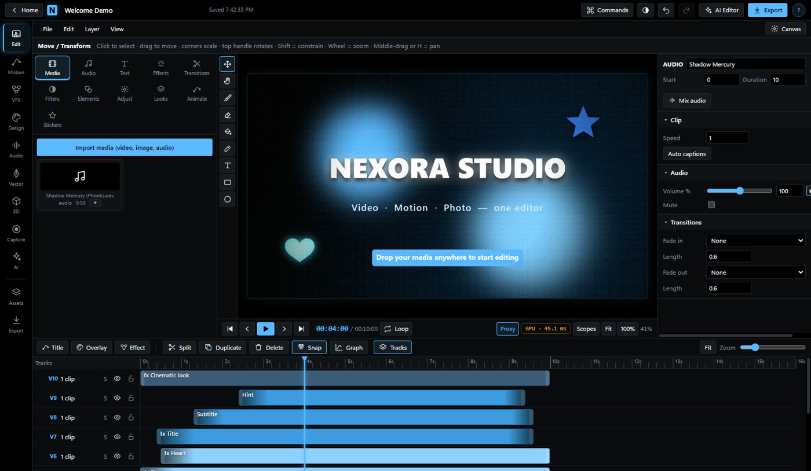
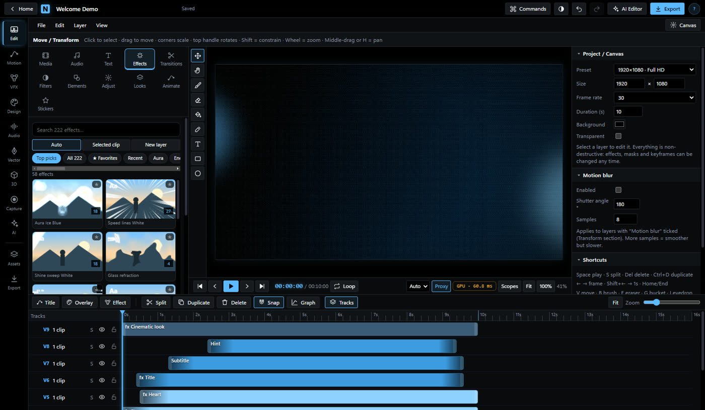
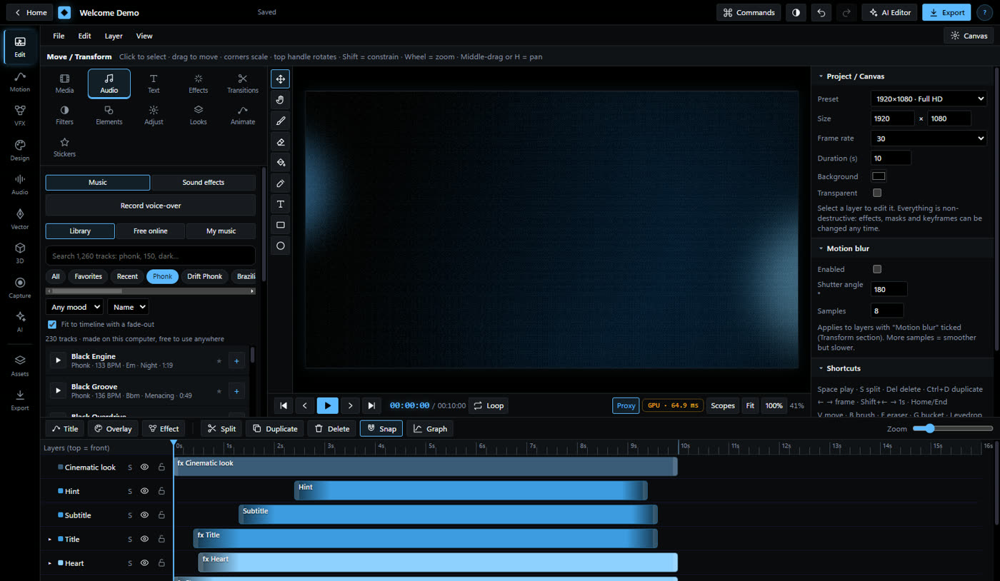
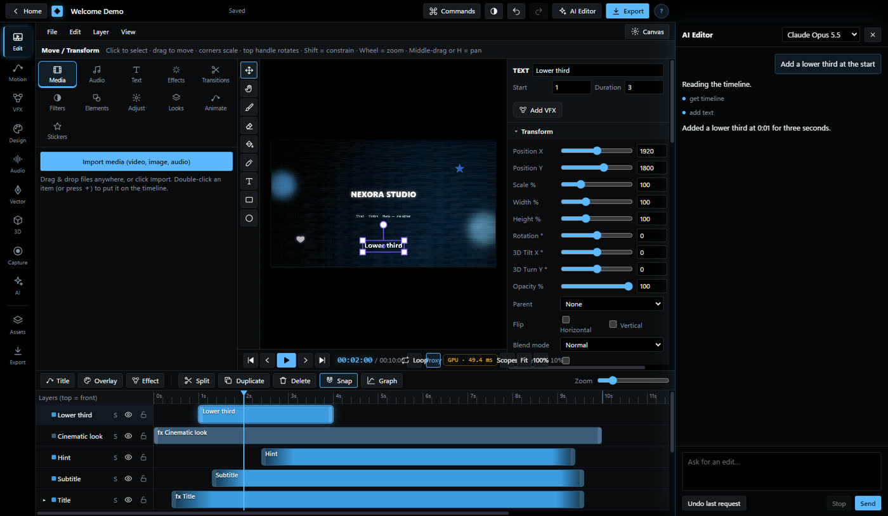

NEXORA Studio is a desktop editor for video, motion graphics, VFX and design. Cut on the beat, grade, title and export up to 8K, with no subscription and no watermark.
One project, one timeline, and every mode working on it: Edit, Motion, VFX, Design, Audio, Vector and 3D.
Tracks view, J/K/L shuttle, ripple, roll and slip, beat-synced cuts, version history and a Project Doctor that catches flash frames and gaps before export.
H.264, HEVC, AV1, Apple ProRes up to 4444 XQ, Avid DNxHR, PNG and TIFF sequences, MP3 and WAV, with a render queue.
Aura, speed lines, shockwave, glass refraction, light leaks, film looks and more, each with strength and speed variations. 26 colour looks and .cube LUTs.
Phonk, Montagem, Funk, Epic and more, made on your computer and free to use anywhere. Plus Creative Commons search and your own files.
Describe the edit and the AI cuts, trims, grades and titles on the real timeline. Bring your own key: OpenCode Zen (DeepSeek, GLM, Kimi, Qwen and more) or Anthropic. On-device captions and background removal.
E-mail accounts with verification codes, authenticator-app 2FA and recovery codes. Your password never leaves your computer.
Black, light blue and white. The interface stays out of the way so the picture can do the talking.




The latest release from GitHub. Every file is built from the code in the repository.
Windows 10 and 11, 64-bit. Includes FFmpeg for ProRes, DNxHR and software encoding.
Download .zipM1 and newer. Not yet tested on a Mac, unsigned, and without FFmpeg codecs.
Download .zipMIT licensed. Read the code, fix a bug, add an effect. FFmpeg and the AI models are downloaded and checksum-verified by a script instead of being stored in git.
Star it on GitHubgit clone https://github.com/sysamiryasar/nexora-studio
cd nexora-studio
powershell -ExecutionPolicy Bypass -File scripts\fetch-vendor.ps1
npm install
npm start